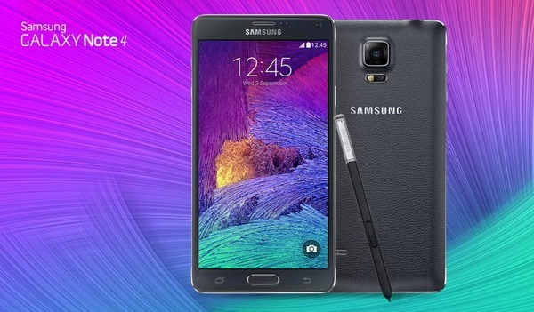
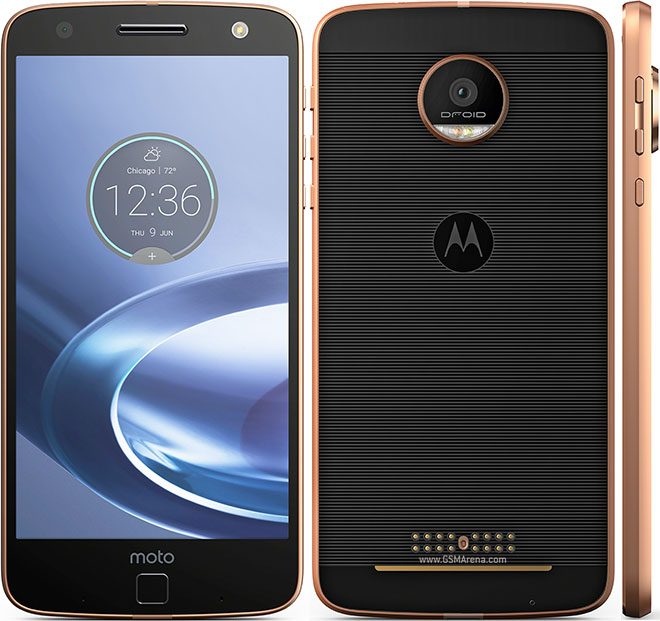
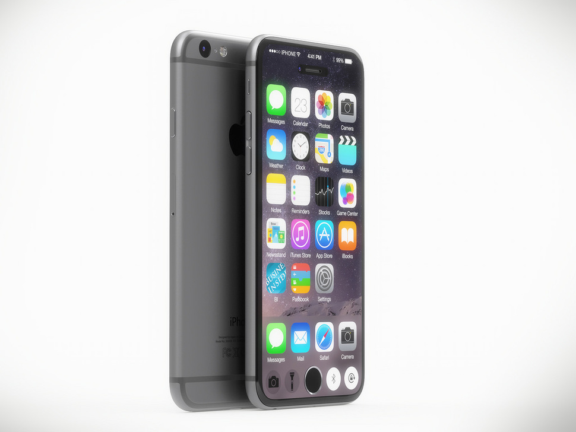
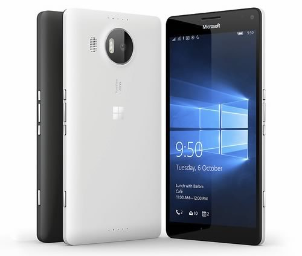
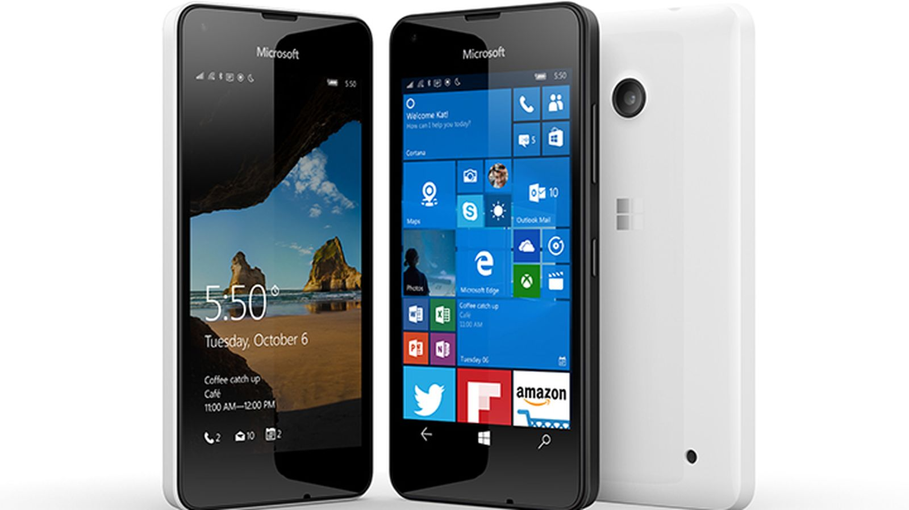

Samsung Galaxy Note 4
El Samsung Galaxy Note 4 es la cuarta generación del phablet de Samsung, esta vez con una pantalla Super AMOLED QHD de 5.7 pulgadas, procesador octa-core a 1.9GHz o quad-core a 2.7GHz (dependiendo de la región), 3GB de RAM, 32GB de almacenamiento interno, ranura microSD, conectividad 4G LTE cat.6, cámara trasera de 16MP con estabilización óptica de imagen, cámara frontal de 3.7 MP con amplio ángulo, soporte S Pen y Android 4.4 KitKat..
Zenfone 3 Deluxe
El Zenfone 3 es un dispositivo de gama media alta, el Zenfone 3 Deluxe sería el buque insignia más potente y el Zenfone 3 Ultra sería el modelo phablet con pantalla más grande. ASUS nos ofrece unas especificaciones muy competitivas, un diseño elegante y metálico y la incorporación de las últimas tecnologías como el lector de huellas o la carga rápida.No nos quedamos ahí, ya que el Zenfone 3 Deluxe es uno de los pocos dispositivos que incorpora hasta 6GB de RAM, una cantidad enorme.
Motorola Moto Z Force
El Motorola Moto Z Force es una variante del Moto Z con pantalla ShatterShield resistente a todo tipo de impactos. Al igual que el Moto Z, cuenta con una pantalla QHD de 5.5 pulgadas, procesador Snapdragon 820, 4GB de RAM, y soporte para los módulos de expansión Moto Mods, aunque cuenta con una cámara mejorada de 21 MP con autofoco por detección de fase y láser.
iPhone 7
Según el análisis del histórico de fechas de lanzamiento de los anteriores modelos de iPhones en las guías del post que te recomiendo sabrás cuándo sale este nuevo teléfono para que puedas comprarlo . El enlace es: fechas de lanzamiento del iPhone 7. Su sistema operativo será iOS 10 y sus características como procesador A10, 3Gb de memoria RAM, pantalla, cámara doble, conexión LiFi, sin conexión auriculares Jack, dual sim, aumento mAh de la batería, 256Gb de almacenamiento, resistente al agua .
Microsoft Lumia 950 XL/h3>
Con este smartphone Lumia se convierte en un digno ejemplar de gama alta, ofreciéndonos una buena pantalla AMOLED de 1440×2560 de resolución protegida por Gorilla Glass 4 y con tecnología ClearBack display. Posee una cámara fotográfica de 20MP con óptica Carl Zeiss, estabilizador de imagen OIS, apertura de f/1.9 y flash de triple LED RGB. Características más que suficientes para satisfacer las exigencias actuales de los fans de Windows..
Lumia 550
El Lumia 550 es uno de los primeros dispositivos en llegar con Windows 10 Mobile de fábrica. Es un dispositivo con buen hardware para el precio que tiene, ya que incluye una pantalla de 4,7 pulgadas con resolución de 1280 x 720 píxeles, por lo que se ve nítida.Incluye una batería de 2.100 mAh, lo que proporciona una buena autonomía con la que se puede llegar sin problemas al final del día. Aunque el procesador es de los menos potentes que se puede encontrar hoy día en un teléfono, gracias a Windows 10 Mobile funcionará con fluidez, y no dará problemas en un uso básico de llamadas, aplicaciones tipo WhatsApp y algo de navegación por la red. Su cámara trasera de 5 megapíxeles es limitada pero suficiente para fotos con buena luz, e incluye una cámara frontal para videoconferencias y algún selfi, pero como todos los dispositivos de gama baja, no destaca en el apartado fotográfico..
